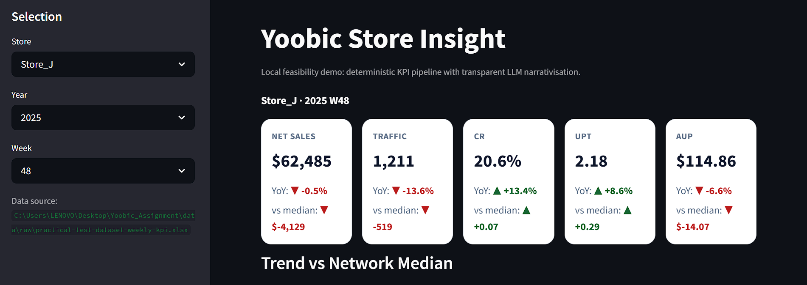
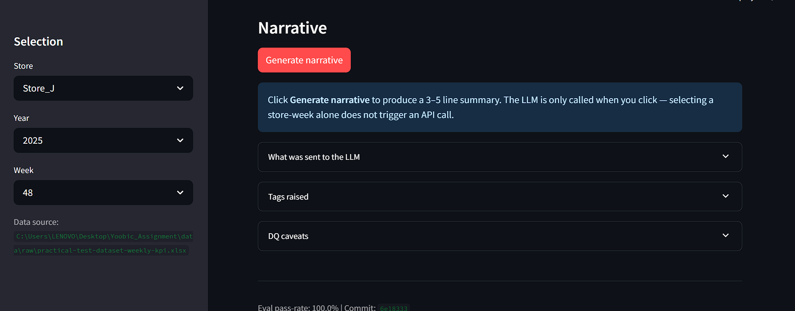
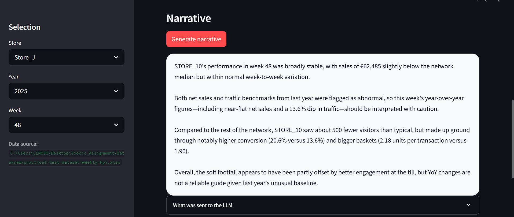
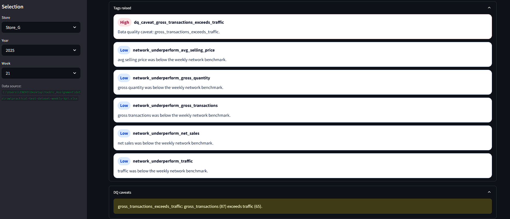
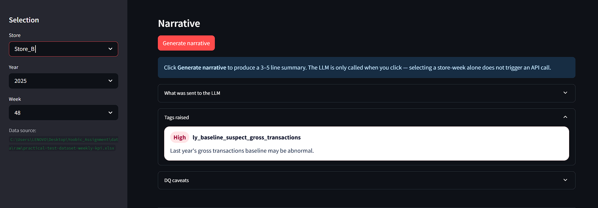
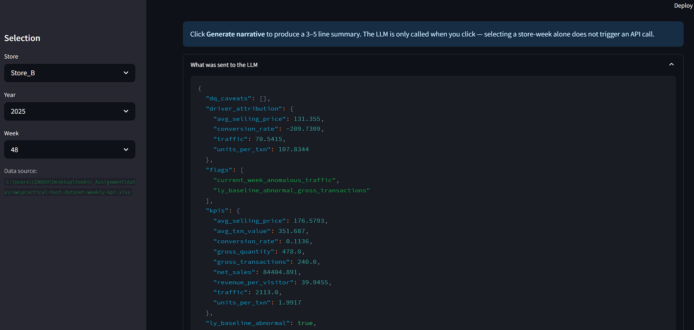

Retails Store Insight
Turning weekly retail KPI data into a transparent, store-manager-ready narrative — deterministic-first, LLM as the last mile.
What it does
Pick a store + week → KPI cards + 12-week trend → one-click narrative grounded in deterministic flags and tags.
Why it's credible
Every number traces to a formula. The LLM narrates a typed payload — it does not decide what's unusual.
Status
52 unit tests pass. Deterministic eval at 100% on 15 golden scenarios. Fallback path works without an API key.
Problem framing
A store manager on Monday morning doesn't need a spreadsheet. They need to know what changed, whether to trust it, and what likely caused it — in 60 seconds.
The PM's user story (verbatim)
"As a store manager, every Monday morning, I want to read a 3-to-5-line natural language analysis of my store performance, including its likely root causes, from the automated analysis of the KPIs of my store, the ones of the rest of the network, and their evolution vs last year."
Plus three explicit PM requirements
- Highlight unusual values — high or low.
- Flag when last year's value was itself abnormal, so YoY isn't misleading.
- Minimise the risk of leaking client-confidential data to the LLM.
What a store manager actually needs
- Direction: did this week beat or miss the network and last year?
- Magnitude: by how much, and is that meaningful?
- Cause: was it footfall, conversion, basket size, or pricing?
- Trust: is the comparison clean, or is the baseline broken?
Why raw KPI data isn't enough
- Five KPIs × YoY × network × anomaly = a cognitive load no one runs through every Monday.
- Numbers without context invite the wrong story (e.g. +31% YoY that's actually a broken baseline).
- Variance ≠ signal — a robust threshold is needed, not "looks high to me".
Product decision
A Streamlit prototype with a deliberate flow: select → inspect → generate → audit. The flow itself is the product argument.
Why Streamlit
- Time-to-first-screen. One file, runs locally, no auth, no infra.
- Right primitive for this v1. KPI cards, a chart, a button, a panel — Streamlit covers all of that natively.
- Faithful preview. A real reviewer can click through the same flow a manager would.
- Honest about what it isn't. Streamlit isn't the production UX — calling that out builds trust rather than overselling.
The flow, and why it's in this order
- Select store + week — manager-shaped entry point, not analyst-shaped.
- Inspect KPIs — cards with YoY delta and gap-to-network-median; 12-week trend vs network. Builds intuition before any text.
- Generate narrative — explicit click. No LLM call happens on selection. Costs and latency stay user-controlled.
- Audit transparency panel — exact payload, tags, and caveats sent to the LLM. One click separates "trust me" from "here's why".
Why this is a good MVP — not a full product
What v1 proves
- Deterministic-first works: 100% numeric grounding on 15 golden scenarios.
- The LLM can be constrained to a narration role with a strict JSON schema and a tag whitelist.
- The privacy boundary (alias + payload) is enforceable in code, not just policy.
- A manager can read a narrative and immediately verify the underlying numbers.
What v1 deliberately doesn't do
- No multi-store roll-up, no action planning, no scheduling.
- No production deployment, RBAC, audit log persistence, or retention policy.
- No prompt versioning beyond
v1/v2ineval/prompts/. - One workbook source — no live ingestion, no DB.
Exploratory Data Analysis
EDA wasn't a deliverable — it was the calibration step. Every threshold and every flag in the pipeline traces back to something I observed in the dataset before writing the logic.
Why I did EDA first
- Confirm the retail equation is an identity (it is — to 1e-9).
- Pick the right anomaly method for the actual distribution shape.
- Decide what counts as data quality vs business reality.
- Find the YoY edge cases before the pipeline learns them as bugs.
Dataset grain
- 1,000 rows, one per
(Store Name, Year, Week). - 10 stores, 2024 + 2025.
- 2024 runs to W52; 2025 truncates at W48.
- No duplicate keys, no nulls in the base columns.
Raw columns vs derived KPIs
Raw (the retail fact table)
Store Name,Year,Weektraffic— visitorsgross_transactions— completed transactionsgross_quantity— units soldnet_sales— revenue
Derived (the KPI tree)
conversion_rate = gross_transactions / trafficunits_per_txn = gross_quantity / gross_transactionsavg_selling_price = net_sales / gross_quantityavg_txn_value = net_sales / gross_transactionsrevenue_per_visitor = net_sales / traffic
The retail identity
Verified across all 1,000 rows; max reconstruction drift 2.9e-11. This is why driver attribution can be a clean log-additive decomposition rather than a heuristic.
Findings that directly shaped the pipeline
| Finding | Design decision in the code |
|---|---|
| No nulls / no duplicate keys | loader.validate() raises hard errors — no silent coercion |
| Identity holds to 1e-9 | KPIs computed, not stored; IDENTITY_ABS_TOLERANCE = 1e-9 |
| 2025 truncated at W48 | YoY uses per-store week intersection — prevents biased denominators |
| Skewed distributions + a hard outlier | MAD-based modified z-score (Iglewicz & Hoaglin 1993), threshold 3.5 |
Store_G 2025 W21 CR ≈ 1.34 | Loader emits gross_transactions_exceeds_traffic; narrative carries explicit DQ caveat |
| ~15% of same-week LY values are themselves anomalous | ly_baseline_abnormal_* flag exists — YoY is caveat'd, not silently quoted |
The Store_G 2025 W21 issue, in one paragraph
Store_G in 2025 W21 has gross_transactions = 87 against traffic = 65. That implies a conversion rate of ~134%, which is physically impossible — you can't convert more visitors than you have. EDA caught this once. The pipeline catches it every run: loader.validate() emits a gross_transactions_exceeds_traffic DQ issue, which becomes a dq_caveat_* tag, which the narrative is required to mention. The product never silently narrates the impossible number.
The full notebook is in notebooks/EDA.ipynb — 11 sections, 22 code cells, 10 plots. The summary doc is docs/eda_summary.md.
ly_baseline_abnormal flag — without EDA you wouldn't know that's even a real failure mode.
Feature engineering & deterministic logic
Everything the LLM "knows" about a store-week is computed by this layer first. No layer below it talks to the LLM.
The pipeline, end-to-end
1. KPI derivation — features.py
- Computes the KPI tree per row using
_safe_divide— zero or NaN denominator returns NaN, never raises. - Five derived metrics:
conversion_rate,units_per_txn,avg_selling_price,avg_txn_value,revenue_per_visitor. - Pure transformation. No comparisons, no thresholds, no opinions.
2. YoY comparisons — same store, same week, prior year
compute_yoy()joins the frame to itself shifted by year, then computes(curr − prev) / prevfor every metric.- Per-store week intersection ensures only like-for-like weeks are compared (matters because 2025 truncates at W48).
- Output: a single column per metric like
net_sales_yoyas a decimal fraction (0.426 → +42.6%).
3. Network reference — compute_network_reference()
- Group by
(Year, Week)across all stores; emit median and MAD per metric. - Median, not mean — robust to a single outlier store dragging the benchmark.
- MAD travels with the median so downstream code can scale gaps in MAD-units.
4. Store-vs-network gaps
store_vs_network[metric] = store_value − network_medianfor every metric in the same week.- Sign matters: positive = above the network, negative = below. The narrative is required to surface materially-negative gaps as the likely root cause.
5. Anomaly detection — anomalies.py
Two families of flag, both robust:
current_week_anomalous_*
- Compares the selected week against that store's own history up to that week (no leakage from the future).
- Modified z-score:
0.6745 × (x − median) / MAD. - Threshold: 3.5 (Iglewicz & Hoaglin 1993).
- Fallback ladder if MAD = 0: IQR-based, then std, then
inf. Never NaN-dependent.
ly_baseline_abnormal_*
- Checks whether last year's same-week value was itself unusual within its own LY-year history (excluding that week).
- Threshold: 3.0 — slightly looser, because we're testing the baseline's reliability, not the headline.
- Requires ≥ 12 prior weeks of LY history. Refuses to flag on a thin baseline.
- If TRUE → narrative is required to caveat the YoY.
6. Driver attribution — log-additive decomposition
Because the retail identity holds, taking logs turns it into a clean sum:
- Each driver's log contribution divided by the total log change → its
%_shareof the YoY net-sales move. - Shares sum to ~100% by construction — not a heuristic.
- A driver is "dominant" only if its share > 50% (configurable in
tags.py) — a hard floor against over-attribution.
7. Tags — the narrative whitelist
The pipeline emits tags, and the narrative is allowed to talk about those tags, not arbitrary observations.
| Tag family | Severity | When it fires |
|---|---|---|
sales_yoy_strong_decline | High | net_sales YoY ≤ −10% |
{driver}_drove_decline | Medium | One driver's share > 50% on a strong-decline week |
ly_baseline_suspect_{kpi} | High | LY same-week value flagged as abnormal |
dq_caveat_{kind} | High | Loader raised any DQ issue (e.g. gross_transactions_exceeds_traffic) |
network_underperform_{kpi} | Low | Negative store-vs-network gap exceeds 1×MAD |
8. DQ caveats — what the loader catches
- Duplicate
(Store, Year, Week)keys. - Missing values in any base column.
gross_transactions > traffic(the Store_G W21 case).
Each becomes a DQIssue dataclass; surfaced into the payload's dq_caveats list; converted to a high-severity tag the narrative must mention.
LLM design
The LLM's job is one sentence: narrate this typed evidence object faithfully and in plain English. It does not decide what's unusual, what's a root cause, or whether YoY is trustworthy.
What goes to the LLM
- A
StoreWeekPayloadJSON: aliased store, year, week, KPIs, YoY values, network medians + MADs, store-vs-network gaps, driver attribution, flags list, DQ caveats list, and thely_baseline_abnormalbool. - A
tagsJSON list — id, severity, kpi, message_template — already filtered to high-severity-first. - The system prompt (
eval/prompts/v2_narrative.md) — a few-shot, hard-rule prompt with three worked examples covering: synthesis, basket weakness, YoY caveat. - A strict JSON schema response format — the model must return an object with
summary,flags_narrated,yoy_caveat_present,network_gap_mentioned,dominant_driver_cited.
What does NOT go to the LLM
- The raw workbook — at no point does
pd.read_exceloutput reach the LLM. - Real store names — replaced by deterministic aliases (
STORE_01…STORE_10) at the boundary. - Other stores' rows — the payload is for one store-week.
- Free-form analytical instructions — the prompt is a fixed template, not assembled per-call.
- Any number not in the payload — the prompt says "Do not invent numbers", and the eval enforces it.
Why a structured payload, not raw rows
- Hallucination surface = inputs × outputs. A row dump invites the model to invent comparisons. A typed object only contains comparisons that already exist.
- Reproducibility. The same payload always produces a comparable narrative — and the eval can replay it offline.
- Auditability. The transparency panel can show exactly what the model saw. Try doing that with row-level prompt engineering.
- Privacy. Aliasing and field whitelisting happen at one boundary, not scattered across prompt-building code.
Why deterministic-first reduces hallucination risk
- The model can't invent unusual values —
flagsis the closed set of unusual things. - The model can't pick a wrong driver —
driver_attributionis computed; the prompt only allows citing one if its share > 35%. - The model can't ignore a broken baseline — when
ly_baseline_abnormalis TRUE, the prompt forces a YoY caveat sentence. - The model can't drop a DQ issue — the eval will fail the scenario if the DQ caveat isn't reflected.
- If the model is unreachable, the deterministic fallback narrates the tags directly — same flags, plainer prose.
The narrate-only contract — enforced in three places
| Layer | How it constrains the LLM |
|---|---|
Prompt (v2_narrative.md) | Hard rules: 3–5 sentences, only payload numbers, every flag reflected, mandatory YoY caveat when triggered, dominant driver only if share > 35% AND baseline is clean. |
Schema (NARRATIVE_RESPONSE_SCHEMA) | OpenAI strict JSON schema — model returns structured fields, not free-form prose. No "let me also tell you about..." escape hatch. |
Eval (judge.py) | Numeric-grounding regex, tag-coverage check, YoY-caveat check, network-gap check, no-hallucinated-claims check. All run against the structured response. |
UI walkthrough
Six screens, in the order you'd click through them on Monday morning.
Main view — KPI cards + 12-week trend

No LLM call has happened yet. Everything on this screen comes from the deterministic pipeline.
Generate narrative — explicit user trigger

LLM narrative response

DQ caveat — Store_G W21

Abnormal LY baseline

ly_baseline_abnormal is true, the narrative is required to add a sentence explaining the YoY is unreliable — and to not lead with the YoY number.Transparency panel

Evaluation
"Good" for v1 means: the deterministic layer is provably correct, and the narrative layer is provably grounded. Narrative quality is a v2 problem and I've been honest about that.
How I validated the app
Unit tests — tests/ (52 passing)
test_loader.py— schema, missing values, duplicate keys, the Store_G W21 detection.test_features.py— KPI tree, YoY, network reference, percentile rank, safe-divide edge cases.test_anomalies.py— modified z-score on synthetic distributions, MAD-zero fallback, LY-history minimum.test_decomposition.py— log-additive identity, share-of-total normalisation.test_payload.py— boundary object shape, anonymiser, DQ caveat normalisation.test_tags.py— every tag family fires when expected and only when expected.test_narrative.py— fallback path content + LLM stub, schema parsing.test_judge.py— numeric grounding, tag coverage, YoY caveat, network gap, no-hallucination checks.
Eval report — eval/reports/eval_v1.md
- 15 golden scenarios in
eval/golden_set.yaml, payload-shaped (so they exercise the narrative layer without needing the workbook). - Coverage: DQ caveat, abnormal LY baseline (3 variants), per-driver decline (traffic, CR, UPT, AUP), network underperformance only, healthy week, no-LY case, mixed signals.
- Five deterministic checks per scenario: numeric grounding, tag coverage, YoY caveat, network gap, no-hallucinated-claims.
- Deterministic pass rate: 100% (threshold = 85%).
- Optional LLM-as-judge —
JUDGE_MODELenv var. CurrentlySKIPin the checked-in report (no live judge run).
What "good" means for v1
| Property | How it's measured | Status |
|---|---|---|
| Numbers in the narrative are real | Regex-based numeric grounding against payload | 100% |
| All flags are addressed | Tag coverage check per scenario | 100% |
| Abnormal LY baseline triggers caveat | YoY-caveat boolean check | 100% |
| Material network gaps surfaced | Network-gap mention check | 100% |
| No invented claims outside the tag whitelist | No-hallucinated-claims check | 100% |
| Pipeline is reproducible offline | Fallback path runs without API key | Yes |
What still needs human review
- Narrative tone and crispness. The structured checks pass; whether the prose is clear for a busy manager is a human-read problem.
- Edge-case taxonomy completeness. 15 scenarios cover the visible failure modes — they don't cover everything a year of real Mondays would.
- LLM-as-judge run. The harness supports it; the current checked-in report shows SKIP because no live
JUDGE_MODELrun was committed. - Drift over prompt versions. v1 vs v2 prompt comparison would be the first thing in v2 eval.
JUDGE_MODEL ≠ OPENAI_MODEL. The checked-in report shows SKIP rather than fake results — that's deliberate honesty, not a gap.
Trade-offs
Every shortcut here was deliberate, and I can defend each one as the right choice for a take-home — not as the right choice forever.
| Decision | What I simplified | Why it's reasonable for v1 |
|---|---|---|
| Streamlit UI | Single-file demo, no auth, no roles, no theming | The UI question for v1 is "is the flow correct?", not "does the design system scale?" |
| One workbook source | Local xlsx, no DB, no live ingestion |
The data shape is the pipeline contract; the source of bytes is interchangeable |
| Deterministic fallback as the safety net | Plain rule-based prose; less elegant than the LLM output | "Works without the API key" is a real operational property, not a hedge |
| Anonymisation by alias map | The map can reverse aliases; raw workbook stays local | Privacy boundary is enforceable in code; full enterprise hardening is a v2 review |
| 15 golden scenarios | Hand-curated, payload-shaped — not generated | Golden sets should be small and intentional; growth comes from real cases observed |
| No prompt versioning system | v1 and v2 prompts coexist as two files | Versioning emerges when there's something to A/B; v1 has one production prompt |
| No persisted audit log of LLM calls | The transparency panel shows the live payload, but nothing is written to disk | Honest disclosure: this is documented as a v2 next step, not silently missing |
| One log-additive driver decomposition | No competing methods (e.g. shapley) tested | Identity holds to 1e-9 — log decomposition is the natural choice; alternatives don't pay off until the dataset is much richer |
| Single-store-week scope | No cross-store action planning, no portfolio view | The PM brief is one manager, one week — solving that crisply beats solving everything thinly |
What I deliberately postponed
- Production deployment + RBAC + secrets management.
- Persisted append-only LLM call log.
- Larger eval suite + LLM-as-judge regression dashboard.
- Privacy review (formal retention, data contract, key management).
- Multi-store rollups and cross-store insights.
- Prompt A/B framework + automated regression on prompt changes.
Realistic next steps
Five tracks, each with a concrete first move. Not a roadmap dump — a prioritised path.
1. V1 hardening
- Persist an append-only audit log of every LLM call: payload hash, prompt version, response, source.
- Promote alias map handling to a single boundary object with a stricter contract.
- Lock prompt + schema + tag-set version into the eval report header.
- Pin model + version explicitly in
.env.examplewith rationale.
2. Better analytics
- Replace the single 1×MAD network-gap threshold with a percentile-based view per metric.
- Add multi-week trend anomaly detection (sustained drift, not just a single-week spike).
- Add seasonality decomposition where 2+ years of history justify it.
- Promote cross-driver interactions (e.g. low-traffic + high-AUV pattern recognition).
3. Better LLM quality & evaluation
- Run LLM-as-judge with a different model than the writer; treat as scored signal, not gate.
- Grow the golden set from 15 → 50+ scenarios sourced from real edge cases.
- A/B prompt v2 vs v3 on the same payload set; auto-fail on regression.
- Track token cost + latency per scenario; add a budget guard.
4. UX improvements
- Replace Streamlit with a real product UI; surface the transparency panel as a "why" affordance, not a debug toggle.
- Add a "compare to last 4 weeks" view so the manager has a recency anchor.
- Per-role views: store manager (this) vs district lead (rolled-up).
- Export-to-share — a cleanly formatted weekly briefing PDF/email.
5. Productionisation, privacy, security
- Replace local workbook with a controlled ingestion path from approved sources, with a data contract and schema validation at the door.
- Formal privacy review: retention policy, alias-map access control, key management, region constraints.
- Add an explicit data-handling layer that strips/redacts beyond aliasing if new fields are introduced.
- SLA-aware fallback: latency budget, quota guard, automatic degrade to deterministic narrative under load.
- Hand-off to ML Engineering for managed deployment, monitoring, and prompt change management.
Likely Q&A
Ten questions I expect, with short, sharp answers. Treat the answer as the headline; expand on the way only when asked.
1. Why deterministic-first?
Because the high-risk failure mode of an LLM here isn't bad prose — it's confident wrongness about numbers. Deterministic-first puts the analytical decisions (what's unusual, what's the dominant driver, whether YoY is trustworthy) into code that can be tested and audited. The LLM's job becomes narrating an evidence object, not reasoning about a spreadsheet. That collapses the hallucination surface and makes the output reproducible.
2. Why not just send the rows to the LLM and ask it to summarise?
Three reasons. First, hallucination — a row dump invites invented comparisons. Second, privacy — once raw store names and rows are in the prompt, the boundary is gone. Third, evaluation — you can't unit-test "the LLM picks the right driver" without a deterministic ground truth to compare against. Structured payload + deterministic flags makes all three problems tractable.
3. How do you avoid hallucinations?
Four layers. (a) The payload is the closed set of facts — there's nothing else for the model to reference. (b) The prompt's hard rules forbid inventing numbers and constrain what claims are allowed. (c) The OpenAI strict JSON schema removes the "let me also tell you about..." escape hatch. (d) The eval harness has a regex-based numeric-grounding check that fails the scenario if any number in the prose isn't in the payload.
4. How would you evaluate narrative quality at scale?
v1 measures grounding, which is the floor. For quality, I'd add three things. (i) LLM-as-judge with a different model than the writer, scoring on clarity, magnitude language, root-cause framing — treated as a signal, not a gate. (ii) A growing golden set seeded from real edge cases observed in production (not synthetic). (iii) Human spot-checks weekly on a sampled cohort, scored on a small rubric, fed back into prompt updates. Quality is iteratively gardened, not measured once.
5. What would you improve with more time?
In order: (1) persisted LLM audit log, because it's the smallest unlock for production trust; (2) richer eval — LLM-as-judge run committed in-repo and 50+ scenarios; (3) network gap thresholds replaced with percentile-based reasoning per metric; (4) prompt versioning + A/B harness so we can iterate without regressing. UI is last on purpose — it's the cheapest thing to redo.
6. How would this work in production?
The deterministic layer is already production-shaped — pure functions, typed boundary object, deterministic outputs. What changes is around it: a controlled ingestion path with a data contract, secrets management for the API key, an audit log + retention policy, role-based access on the alias map, observability on latency and cost, and a graceful degrade to the deterministic fallback under quota or outage. The boundary object is the contract that keeps the LLM swap-friendly.
7. What are the limitations of your prototype?
Three honest ones. (a) Privacy is improved (aliasing + payload field whitelist) but not enterprise-grade — the alias map is reversible and there's no formal access control. (b) The LLM-as-judge isn't run in the checked-in report; the harness exists but the current report shows SKIP. (c) The golden set is 15 hand-curated cases — large enough to be meaningful, small enough that real production usage will surface failure modes the suite doesn't yet cover.
8. Why Streamlit?
Because the v1 question isn't "what's the right product UI" — it's "is deterministic-first narration grounded enough to ship to a manager?". Streamlit gives me the smallest scaffolding to test that question end-to-end in a take-home timeframe: KPI cards, a chart, a button, a transparency panel, and a real review experience. It's deliberately throwaway. The pipeline is what would survive into production.
9. How did the EDA influence the product?
Concretely: every threshold and every flag has an EDA root cause. Median+MAD instead of mean+std came from the Store_G outlier visibly inflating σ. The 3.5 modified-z threshold is Iglewicz-Hoaglin, validated on the actual distribution. The per-store week intersection for YoY came from spotting that 2025 truncates at W48 while 2024 runs to W52. The ly_baseline_abnormal flag exists because EDA showed ~15% of LY same-week values are themselves anomalous. The DQ caveat surfaces because Store_G W21's CR ≈ 1.34 was visible immediately and would silently corrupt any narrative.
10. What's your "reason to believe" — why does this PM bet pay off?
Because the bottleneck for a Monday-morning briefing isn't natural language — it's analytical synthesis under noise. The deterministic layer does the synthesis, the LLM does the language, and the transparency panel makes the seam auditable. That decomposition is what makes this kind of feature shippable to a real store manager rather than indefinitely "interesting prototype". The eval harness is what keeps it shippable as the prompts and data evolve.
Closing the loop
One sentence each, on the three things to leave the room with.
Architecture
Raw workbook → deterministic features → typed payload → constrained narration → eval harness. The seam is the boundary object, and that's what keeps the whole thing auditable.
Product instinct
The PM brief asked for one specific Monday-morning experience. I built that. I didn't build "a generic retail AI assistant", and that scoping discipline is the v1 reason to believe.
Honesty about gaps
Privacy is improved, not finished. Eval is grounded, not yet judged. UI is throwaway, not productised. Each gap is a labelled v2 lane — not a surprise.
Repo: project root. Run with streamlit run app/streamlit_app.py. Tests: python -m pytest -q. Eval: python -m retails_insight.eval.